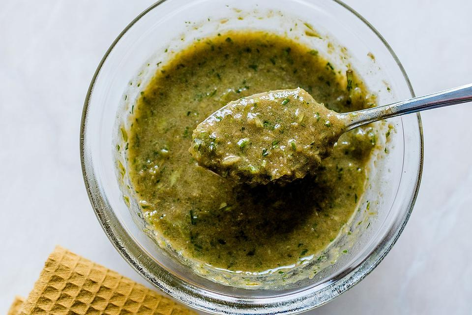

Herbal Salad Dressing

Description
The perfect allrounder salad dressing for lettuce, cucumber, carrots, tuna, or any salad really. Choose your favourite and give it a herbal boost.
Ingredients
- 1 garlic clove
- 1 tsp. of regular mustard
- 2 tbsp. of soy cream
- dill sprigs
- 2 tbsp. of herb vinegar (I use Hengstenberg 13 Herbs Vinegar)
- 3 tbsp. of rapeseed oil
- salt and pepper to taste
Add further herbs as you please (e.g. lemon thyme, it's mouth-watering!)
Steps
- Peel garlic and chop it finely.
- Wash herbs and chop finely.
- Put all ingredients together in the empty salad bowl.
- Stir well until smooth.
- Add mustard, vinegar, salt and/or pepper to taste.
- Add the salad of your choice and mix it all well.
- Enjoy!